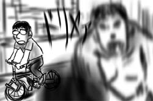
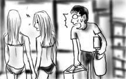
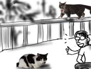

電話加入と同時にDSLも申し込んだのですが，未だモデムが届きません．電話は使えるようになっているので，週末に家にいると，ついついダイヤルアップで繋いでしまい，すごい課金を請求されそうです．
というわけで，日本から持ってきた折り畳みたくなる号(自転車)を駆り，家の周りを散策に出かけることにしました．アパートの裏がすぐ港になっているので，そこから自転車専用道を海沿いに北上します．
車で近所を走っていると，精油工場が立ち並んでいるのが見え，とても泳げなさそうな感じですが，実は工場の隙間を縫うようにひっそりとビーチが広がっていました．抜けるような青空に白い砂浜，砂浜を這う送油管に沖を通行するタンカー．台無し！
そんな砂浜には，
「二人でいたってつまんないから，〜君とか呼んじゃおうっか」
「なんでそこで〜が出てくるのよ」
「あんた〜君のこと気になるんでしょ」
「別にそんなんじゃなくて！」
「いいからいいから，まかせておきなって！」(携帯電話を耳に当てながら)
「…もう！」
みたいな，いかにもアメリカンドラマぽい二人組の女学生なんかがいました(妄想)．

ビーチでは他にも，X-BOXのキラーソフト(いろんな意味で)のようなアハハウフフ感のまるでない，屈強な男たちがフンッ！ハッ！バシッ！と繰り広げるビーチボールが見られます．
引っ越し二日目です．
今日はTVとTV台，本棚やCDラックなどを買い込み，車からヒーヒーと運び込みます．家具類を運び入れていると廊下でナチュラルに金髪ビキニ女性×２とすれ違って驚きました．と思ったら今度はベランダに猫×２が登場！なんだここ！
 
日本からの荷物も半分ほど開封し，棚に並べてようやく部屋らしくなってきました．ちなみに半分だけなのは，漫画とかゲームとか開封した先から楽しんでいたからです．当然のことです．
夜，部屋でのんびりしていたら，隣からズンドコという重低音が聞こえてきました．
ウーハー！(悲鳴)
海を渡ろうが何をしようが，結局こうなるのだなぁ，と薄れ行く意識の中で思いました．
ようやくホテルからアパートに移りました．
こちらに来てすぐにアパート管理会社を回り，割と即決に近い形で決めたものの，空き待ちで一か月ほどホテルに滞在する羽目になっていたのですが，これでようやく自分の部屋でのんびりとゲームや漫画に親しめます(最悪)．
正午すぎには，日本からの荷物と，買って配達を指定しておいたベッド，机などが届きました．ベッドはクィーンサイズを買ったのですが(シングルだと落っこちるから)，届いてみると組み立て式で，途方に暮れました．マットレスも含めてひたすら重い．こんなでかくて重いものを一人で組み上げるのか…．ベッドルームを歩き回り，こちらを差し込むとあちらが外れ…というようなことをやっているうちに筋肉痛になってきたので，僕もまだまだ若いと思いました(間違った自己肯定)．
まだ電話もTVも棚類もありませんが，とりあえず寝床と作業机を確保したのでかなり落ち着きました．
アパートですが，驚くことにプール付きです．
嘘じゃありません．
と書いたら，キャッシュカードが届きました！どんなにこの日を待った事か．さっそく会社近くのキャッシュディスペンサーにカードをねじ入れ，口座開設時に登録した暗証番号を入力します．
エラー
あっれー？再度入力し直してもエラー．登録した暗証番号を勘違いしているかもしれないので，別の候補を試してみてもエラー．そして，その3回目ではカードがATMから返って来ませんでした．一体何がどうなっているのか．
大慌てで銀行に電話を入れ，チンケな英語で状況を説明したのですが，オペレータからは「わからんわ，何がどうなってるん？」と，それはこっちの台詞だろうというような返事が返って来るばかりでちっとも話が先に進みません．
結局，オペレータの人が僕の口座を端末で確認したところ，防犯機能でカードが使用停止になってしまっているようです．新しいカードと新しい暗証番号が７営業日後に届くそうです．
また無駄使いライフへ逆戻りです．
こちらで開設した銀行口座に初の給料が振り込まれたようです．しかし残念ながらキャッシュカードが届くまではそれを使う手段がまったくありません．
仕方ないので，持って来たトラベラーズチェックでおつりを貰いながら現金を作っているのですが，トラベラーズチェックを使うとレジで露骨にイヤな顔をされたり，いちいちパスポートを見せる事を要求されたり，買った物の値段に比べておつりの方が多すぎると使用を断られたり，とにかく何かと不便な思いをします．
無理矢理CDを買ってトラベラーズチェックでおつりをもらい，それで食料を調達する，といったような計画的な無駄使いが要求されるのです．
CD，望むところです(矛盾)．